Advanced StyleRows and Conditional Formatting in ksTFL
ksTFL Development Team
2026-03-27
Advanced_StyleRows.RmdOverview
This vignette explains the powerful conditional row styling system in
ksTFL, centered around compute_cols() and its action
functions: c_style(), c_merge(), and
c_addrow(). These tools enable sophisticated data-driven
formatting without manual post-processing.
Category and prerequisites
This is an advanced conditional-logic vignette.
- Audience: users building data-driven row-level formatting rules
- Prerequisites: complete
Getting_Started_with_ksTFLand basiccompute_cols()familiarity - Focus: lazy evaluation, helper functions, and composable row actions
- Outcome: robust, reviewable conditional formatting workflows
Core Concept: Lazy Evaluation
compute_cols() uses lazy evaluation—it
captures your conditions and actions as unevaluated expressions
(quosures), storing them in the spec’s metadata. The actual evaluation
happens later during create_report(), when all specs are
finalized and the data context is fully established.
Why Lazy Evaluation?
- Deferred Context: Column selections and data references are resolved when the report structure is complete
-
Tidyselect Support: Use
everything(),starts_with(), etc. without worrying about timing - Multi-Stage Processing: Separate specification (design time) from execution (render time)
The Three Action Functions
c_style(): Conditional Styling
Apply style references to cells based on conditions:
library(ksTFL)
data <- data.frame(
patient = sprintf("PAT-%03d", 1:20),
age = c(23, 45, 67, 34, 89, 56, 42, 71, 38, 29,
55, 66, 44, 52, 60, 48, 35, 70, 41, 58),
response = sample(c("CR", "PR", "SD", "PD"), 20, replace = TRUE)
)
# Define styles first
spec <- create_table(data) |>
add_style(id = "highlight_green", s_font(color = "#006400", bold = TRUE)) |>
add_style(id = "highlight_red", s_font(color = "#8B0000", bold = TRUE))
# Apply conditional styling
spec <- spec |>
compute_cols(
response == "CR",
c_style(response, styleRef = "highlight_green")
) |>
compute_cols(
response == "PD",
c_style(response, styleRef = "highlight_red")
)Result: Rows where response == "CR"
show green bold text; rows where response == "PD" show red
bold text:
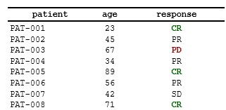
c_merge(): Conditional Cell Merging
Merge multiple columns into a single display cell:
data_groups <- data.frame(
group = c("Treatment A", "Treatment A", "Treatment A",
"Placebo", "Placebo"),
visit = c("Week 0", "Week 4", "Week 8", "Week 0", "Week 4"),
value = c(5.2, 6.1, 7.3, 4.8, 5.5)
)
spec <- create_table(data_groups) |>
compute_cols(
!firstOf(group), # Not the first occurrence of this group value
c_merge(c(group, visit))
)Result: When consecutive rows have the same
group, their group and visit
cells merge, displaying the merged content in the group
column.
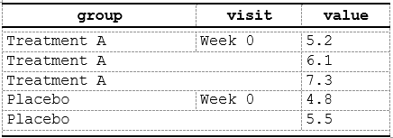
Note: The cols argument to
c_merge() must resolve to at least two
consecutive columns in the final report column order.
The value shown in the merged cell is taken from the
first column in the cols sequence.
c_addrow(): Conditional Row Insertion
Insert new rows based on data patterns:
spec <- create_table(data_groups) |>
compute_cols(
firstOf(group), # First row of each group
c_addrow(pos = "above") # Insert an empty separator/header row above
)Result: An empty separator row is inserted above
each new group. To copy a single column’s value into the inserted row
use value_from (see later examples). Use
pos = "below" to insert after the matching row instead.
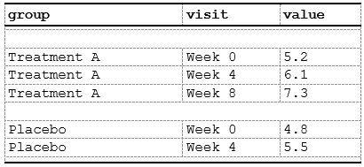
c_pageBreak(): Conditional Page Break
Insert a page break at the matching row. This is useful to force a new page when a logical grouping or large block ends.
spec <- create_table(data_groups) |>
compute_cols(
firstOf(group), # Insert page break starting from first row of each group
c_pageBreak()
)Result: The renderer will start a new page at rows matching the condition:
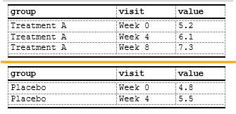
Evaluation Context
The Data Environment
Conditions and actions are evaluated in
spec$.metadata$data_env, which contains:
- Data columns: Direct access to all columns (even invisible ones)
-
Helper functions:
firstOf(),lastOf(),firstRow(),lastRow(),rowNumber(),everyNth(),firstOfBlock() - Embedded functions: Internal utilities for column access
Important: These helper functions are only available inside the
condargument ofcompute_cols(). They are not standalone exported functions — you cannot call them outside ofcompute_cols().
# You can reference any column directly in conditions
spec <- create_table(data) |>
compute_cols(
age > 60 & response %in% c("CR", "PR"), # Multi-column condition
c_style(c(age, response), styleRef = f_combine('b', 'bg_mint'))
)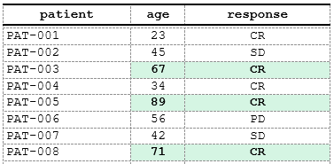
Available Helper Functions
The following helpers are available exclusively inside
compute_cols() conditions:
-
firstOf(...): Logical vector marking first occurrence of each value combination in specified columns -
lastOf(...): Logical vector marking last occurrence of each value combination in specified columns -
firstRow(): Logical vector TRUE only at first row -
lastRow(): Logical vector TRUE only at last row -
rowNumber(): Integer vector of row numbers (1-based) -
everyNth(n): Logical vector TRUE at every nth row -
firstOfBlock(col, n, offset): Returns logical vector marking first row of every n-th block defined bycol
# Highlight first and last rows using helper functions
spec <- create_table(data) |>
compute_cols(
firstRow() | lastRow(),
c_style(everything(), styleRef = "border_emphasis")
)
# Use firstOf/lastOf for value-based boundaries
spec <- create_table(data_groups) |>
add_style(id = "group_boundary", s_font(bold = TRUE)) |>
compute_cols(
firstOf(group) | lastOf(group),
c_style(group, styleRef = "group_boundary")
)
# Use everyNth for alternating patterns
spec <- create_table(data) |>
add_style(id = "gray_bg", s_table_style(background_color = "#F5F5F5")) |>
compute_cols(
everyNth(2), # Every 2nd row starting from row 1
c_style(everything(), styleRef = "gray_bg")
)Advanced c_style() Patterns
Multiple Column Styling
Use tidyselect to style multiple columns at once:
data_lab <- data.frame(
patient = sprintf("PAT-%03d", 1:10),
hemoglobin = rnorm(10, 13.5, 1.5),
glucose = rnorm(10, 95, 15),
cholesterol = rnorm(10, 200, 30)
)
spec <- create_table(data_lab) |>
add_style(id = "out_of_range", s_font(color = "#FF4500", bold = TRUE)) |>
compute_cols(
hemoglobin < 12 | hemoglobin > 16,
c_style(hemoglobin, styleRef = "out_of_range")
) |>
compute_cols(
glucose < 70 | glucose > 140,
c_style(glucose, styleRef = "out_of_range")
) |>
compute_cols(
cholesterol > 240,
c_style(cholesterol, styleRef = "out_of_range")
)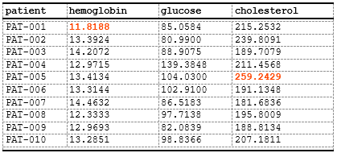
Conditional Styling with Complex Logic
Combine multiple conditions:
spec <- create_table(data) |>
add_style(id = "critical_senior",
s_font(color = "#8B0000", bold = TRUE),
s_table_style(background_color = "#FFEBCD")) |>
compute_cols(
age >= 60 & response == "PD",
c_style(c(patient, age, response), styleRef = "critical_senior")
)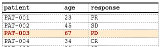
Row-Level Styling
Style entire rows by targeting all columns:
spec <- create_table(data) |>
add_style(id = "alternate_row",
s_table_style(background_color = "#F0F0F0")) |>
compute_cols(
rowNumber() %% 2 == 0, # Even rows
c_style(everything(), styleRef = "alternate_row")
)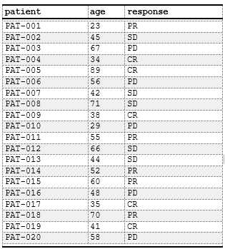
Advanced c_merge() Patterns
Multi-Column Grouping Merges
Merge across multiple grouping levels:
data_nested <- data.frame(
study = rep(c("Study A", "Study B"), each = 6),
phase = rep(c("Phase I", "Phase II", "Phase III"), 4),
site = rep(c("Site 1", "Site 2", "Site 1", "Site 2"), 3),
enrollment = sample(10:50, 12)
)
spec <- create_table(data_nested) |>
# Merge study column for consecutive same-study rows
compute_cols(
!firstOf(study),
c_merge(c(study, phase, site))
) |>
# Merge phase column within same study
compute_cols(
!firstOf(study, phase),
c_merge(c(phase, site))
)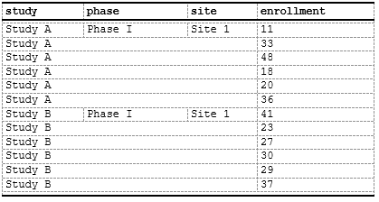
Merging with Styling
Combine merging with conditional styles:
spec <- create_table(data_nested) |>
add_style(id = "merged_header",
s_font(bold = TRUE),
s_table_style(background_color = "#E0E0E0")) |>
compute_cols(
!firstOf(study),
c_merge(c(study, phase, site))
) |>
compute_cols(
firstOf(study), # First row of group
c_style(study, styleRef = "merged_header")
)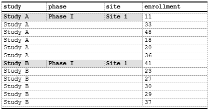
Advanced c_addrow() Patterns
Summary Rows
Insert calculated summary rows:
data_sales <- data.frame(
region = c("North", "North", "South", "South", "West", "West"),
product = rep(c("A", "B"), 3),
revenue = c(100, 150, 200, 120, 180, 160),
total = c(250, 250, 320, 320, 340, 340)
)
spec <- create_table(data_sales) |>
add_style(id = "summary_row",
s_font(bold = TRUE),
s_table_style(background_color = "#D3D3D3")) |>
# we do not need the `total` column itself - set to invisible
define_cols(total, isVisible = F) |>
compute_cols(
lastOf(region), # Last row of each region
# Insert subtotal row
c_addrow(pos = "below",
value_from = total, #value from total column
styleRef = f_combine("summary_row", 'ar'))
)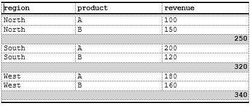
Header Rows
Insert section (group) headers to make a stub:
data_sales <- data.frame(
region = c("North", "North", "South", "South", "West", "West"),
product = rep(c("Gas", "Oil"), 3),
revenue = c(100, 150, 200, 120, 180, 160)
)
spec <- create_table(data_sales) |>
# Custom style just for fun
add_style(id = "section_header",
s_font(bold = TRUE, font_size = "10pt", color = '#FFFFFF'),
s_table_style(background_color = "#4682B4")) |>
# Hide the `region` column as we want to use its value as heading
define_cols(region, isVisible = F) |>
# Add column labels:
define_cols(
c(product, revenue),
label = c('Region<br> Product', 'Revenue<br>(Million of $)'),
# Use embedded indent style to indent the `product` value in a column
valueStyleRef = c('indent_1', NA) # NA here means we are not using any style for `revenue`
) |>
# Use `c_addrow` to add a line with the value from `region` column
compute_cols(
firstOf(region), # First row of each new region
c_addrow(pos = "above",
value_from = region,
styleRef = "section_header")
)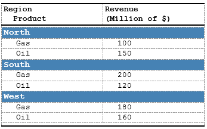
More complex example with two-level indents:
data_sales <- data.frame(
region = c("North", "North", "North", "South", "South", "South", "West", "West", "West"),
product = rep(c("Total","Gas", "Oil"), 3),
revenue = c(250, 100, 150, 320, 200, 120, 340, 180, 160)
)
spec <- create_table(data_sales) |>
# Hide the `region` column as we want to use its value as heading
define_cols(region, isVisible = F) |>
# Add column labels:
define_cols(
c(product, revenue),
label = c('Region<br> Product', 'Revenue<br>(Million of $)'),
# Use embedded indent style to indent the `product` value in a column
) |>
# Use `c_addrow` to add a line with the value from `region` column
compute_cols(
firstOf(region), # First row of each new region
c_addrow(pos = "above",
value_from = region,
styleRef = 'b')
) |>
# the `Total` value will be indented 0.5cm
compute_cols(
product == 'Total',
c_style(product, f_combine('i', 'indent_1')),
c_style(revenue, 'i')
) |>
# Other values ('Gas', 'Oil') will be indented by 1cm
compute_cols(
product != 'Total',
c_style(product, 'indent_2')
) As a result we are getting two-level stub:
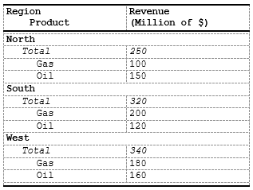
c_glue(): Append or Prepend Text to Cell Values
c_glue() concatenates a literal string or a data column
value to the display text of matching cells — useful for appending
units, prefixing markers, or building composite labels without creating
extra columns.
Parameters:
- cols: columns to modify (tidyselect)
- position: "before" or
"after" — where to attach the text
- glue_col: name of a data column whose value to attach
(mutually exclusive with text)
- text: a literal string to attach (mutually exclusive
with glue_col)
- separator: string inserted between original value and
the glued text (default NULL)
data_units <- data.frame(
parameter = c("Hemoglobin", "Glucose", "Cholesterol"),
value = c(13.5, 95.0, 200.0),
unit = c("g/dL", "mg/dL", "mg/dL")
)
spec <- create_table(data_units) |>
# Hide the unit column — use it only as a glue source
define_cols(unit, isVisible = FALSE) |>
# Append unit to value: "13.5" → "13.5 g/dL"
compute_cols(
!is.na(value),
c_glue(value, position = "after", glue_col = unit, separator = " ")
)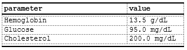
c_glue() is fully compatible with c_style()
and c_merge() in the same compute_cols()
call.
c_clear(): Blank Cell Content in Matching Rows
c_clear() renders specified cells as empty (blank) in
matching rows without removing the column or affecting layout. Useful
for conditional deduplication, when a dedupe parameter of
define_col() is not enough.
data_groups <- data.frame(
group = c("Treatment A", "Treatment A", "Treatment A", "Placebo", "Placebo"),
visit = c("Week 0", "Week 4", "Week 8", "Week 0", "Week 4"),
value = c(5.2, 6.1, 7.3, 4.8, 5.5)
)
spec <- create_table(data_groups) |>
# Show group label only on first row of each group; blank it on the rest
compute_cols(
!firstOf(group),
c_clear(group)
)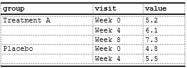
Note: c_clear() only affects the
rendered display text. The underlying data value is still available for
conditions in other compute_cols() calls.
Combining Actions Together
Chain multiple compute_cols() calls and c_*
actions to build a fully formatted table:
data_sales <- data.frame(
region = c("North", "North", "North",
"South", "South", "South",
"West", "West", "West"),
product = rep(c("Oil", "Gas", "TOTAL"), 3),
revenue = c(100, 150, 250, 200, 120, 320, 180, 160, 340)
)
spec <- create_table(data_sales) |>
add_style(id = "section_header",
s_font(bold = TRUE, font_size = "11pt", color = '#FFFFFF'),
s_table_style(background_color = "#4682B4")) |>
# Make Region invisible, since we want to make it as header row
define_cols(region, isVisible = F) |>
# Define column labels
define_cols(c(product, revenue), label = c('Product', 'Revenue<br>(Million of $)')) |>
# Make a header row from the `region` value
compute_cols(
firstOf(region), # First row of each new region
c_addrow(pos = "above",
value_from = region,
styleRef = "section_header")
) |>
# Create a summary row for `Total` value
# Note here how a consecutive calls to `c_*` atomic functions produce final result
compute_cols(
product == 'TOTAL',
# merge `product` and `revenue` to a single column (the value became value from `product`)
c_merge(c(product, revenue), styleRef = f_combine('b','i','bt_th','ar')),
# clear the value, since we want to rebuild it:
c_clear(product),
# take the value of `region` to the merged cells..
c_glue(product, 'after', region),
# add the word 'total' ...
c_glue(product, 'after', text = ' total: '),
# and add the value for `revenue` column to get the final string
c_glue(product, 'after', revenue)
) Here we can see how a simple planar data frame:
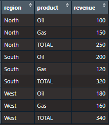
become a production ready table:
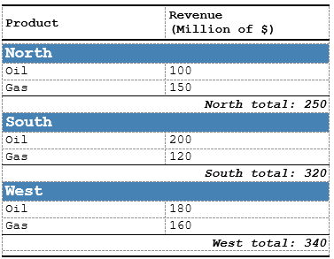
Performance Tips
1. Minimize compute_cols() Calls
Each call adds evaluation overhead. Combine conditions when possible:
# ❌ Less efficient:
spec <- create_table(data) |>
compute_cols(age < 30, c_style(age, styleRef = "young")) |>
compute_cols(age >= 30 & age < 60, c_style(age, styleRef = "middle")) |>
compute_cols(age >= 60, c_style(age, styleRef = "senior"))
# ✅ More efficient (single pass with case_when logic):
spec <- create_table(data) |>
add_style(id = "young", s_font(color = "#008000")) |>
add_style(id = "middle", s_font(color = "#0000FF")) |>
add_style(id = "senior", s_font(color = "#FF0000")) |>
compute_cols(
age < 30,
c_style(age, styleRef = "young")
) |>
compute_cols(
age >= 30 & age < 60,
c_style(age, styleRef = "middle")
) |>
compute_cols(
age >= 60,
c_style(age, styleRef = "senior")
)
# Note: Consider refactoring to reduce compute_cols() calls if performance is critical2. Use Vectorized Conditions
Avoid row-by-row operations in custom functions:
# ❌ Slower (scalar logic):
spec <- create_table(data) |>
compute_cols(
sapply(response, function(x) x %in% c("CR", "PR")), # Row-by-row
c_style(response, styleRef = "responder")
)
# ✅ Faster (vectorized):
spec <- create_table(data) |>
compute_cols(
response %in% c("CR", "PR"), # Vectorized
c_style(response, styleRef = "responder")
)3. Pre-Filter Data When Possible
If conditions apply to a small subset, consider filtering data upfront:
# If only 5% of rows need special formatting:
# Consider creating separate tables and combining in report
data_outliers <- subset(data, age > 80)
data_normal <- subset(data, age <= 80)
spec_outliers <- create_table(data_outliers) |>
add_style(id = "outlier", s_font(color = "#FF0000", bold = TRUE)) |>
compute_cols(TRUE, c_style(everything(), styleRef = "outlier"))
spec_normal <- create_table(data_normal)
# Combine in report
report <- create_report(spec_normal, spec_outliers)4. Style Consolidation
ksTFL automatically consolidates identical styles, but you can help by reusing style references:
# ✅ Define once, use many times:
spec <- create_table(data) |>
add_style(id = "critical", s_font(color = "#FF0000", bold = TRUE)) |>
compute_cols(age > 80, c_style(age, styleRef = "critical")) |>
compute_cols(response == "PD", c_style(response, styleRef = "critical"))
# ❌ Avoid duplicate style definitions:
# (This creates two identical but separate styles)
spec <- create_table(data) |>
add_style(id = "critical_age", s_font(color = "#FF0000", bold = TRUE)) |>
add_style(id = "critical_response", s_font(color = "#FF0000", bold = TRUE))Debugging and Inspection
Viewing Captured Actions
Inspect what compute_cols() has stored:
spec <- create_table(data) |>
compute_cols(
age > 60,
c_style(age, styleRef = "elderly")
)
# Examine metadata
str(spec$.metadata$compute_cols)
# Shows captured quosures and action typesTesting Conditions Manually
Test conditions on your data frame before adding to spec:
# Test your condition directly on the data before passing to compute_cols()
test_condition <- with(data, age > 60)
sum(test_condition) # How many rows match?
data[test_condition, ] # Which rows?
# Once confirmed, add to spec
spec <- spec |>
compute_cols(age > 60, c_style(age, styleRef = "elderly"))Incremental Building
Add compute_cols() one at a time and inspect
results:
spec <- create_table(data)
# Add first action
spec <- spec |>
compute_cols(age > 60, c_style(age, styleRef = "elderly"))
print(spec) # Check structure
# Add second action
spec <- spec |>
compute_cols(response == "CR", c_style(response, styleRef = "success"))
print(spec) # Check againCommon Patterns Library
Pattern 1: Alternating Row Colors
spec <- create_table(data) |>
add_style(id = "gray_bg", s_table_style(background_color = "#F5F5F5")) |>
compute_cols(
rowNumber() %% 2 == 0,
c_style(everything(), styleRef = "gray_bg")
)Pattern 2: Grouped Section Headers with Merging
spec <- create_table(data_groups) |>
add_style(id = "group_header",
s_font(bold = TRUE, font_size = "11pt"),
s_table_style(background_color = "#D0D0D0")) |>
# Insert header row before each new group
compute_cols(
firstOf(group),
c_addrow(pos = "above", styleRef = "group_header")
) |>
# Merge consecutive same-group cells
compute_cols(
!firstOf(group),
c_merge(c(group, visit))
)Pattern 3: Conditional Highlighting with Thresholds
spec <- create_table(data_lab) |>
add_style(id = "low", s_font(color = "#0000FF")) |>
add_style(id = "normal", s_font(color = "#008000")) |>
add_style(id = "high", s_font(color = "#FF0000")) |>
compute_cols(
hemoglobin < 12,
c_style(hemoglobin, styleRef = "low")
) |>
compute_cols(
hemoglobin >= 12 & hemoglobin <= 16,
c_style(hemoglobin, styleRef = "normal")
) |>
compute_cols(
hemoglobin > 16,
c_style(hemoglobin, styleRef = "high")
)Pattern 4: Summary Rows with Totals
spec <- create_table(data_sales) |>
add_style(id = "total_row",
s_font(bold = TRUE),
s_table_style(background_color = "#FFD700")) |>
compute_cols(
lastOf(region), # Last row of each region
c_addrow(pos = "below", styleRef = "total_row")
)Limitations and Workarounds
Limitation 1: No Direct Aggregate Functions in Conditions
You can’t use sum(), mean(), etc. directly
in conditions:
# ❌ This won't work as expected:
spec <- create_table(data) |>
compute_cols(
age > mean(age), # Evaluates mean() at condition capture, not evaluation
c_style(age, styleRef = "above_average")
)Workaround: Pre-calculate and add as a column:
data$age_above_avg <- data$age > mean(data$age)
spec <- create_table(data) |>
compute_cols(
age_above_avg,
c_style(age, styleRef = "above_average")
)Limitation 2: No Nested c_*() Functions
You can’t nest action functions:
# ❌ This is invalid:
spec <- create_table(data) |>
compute_cols(
age > 60,
c_style(age, styleRef = c_merge(patient, age)) # Not allowed
)Workaround: Use separate compute_cols()
calls:
spec <- create_table(data) |>
compute_cols(age > 60, c_style(age, styleRef = "elderly")) |>
compute_cols(age > 60, c_merge(c(patient, age)))Limitation 3: Style References Must Exist
styleRef must reference a previously defined style:
# ❌ This will error at evaluation time:
spec <- create_table(data) |>
compute_cols(age > 60, c_style(age, styleRef = "undefined_style"))Workaround: Always define styles before using them:
spec <- create_table(data) |>
add_style(id = "elderly", s_font(bold = TRUE)) |> # Define first
compute_cols(age > 60, c_style(age, styleRef = "elderly"))Integration with Other ksTFL Features
Using with define_cols()
compute_cols() works alongside column definitions:
spec <- create_table(data) |>
define_cols(age, type = "numeric", format = "0.0", colWidth = "15%") |>
compute_cols(
age > 65,
c_style(age, styleRef = "elderly")
)Using with Invisible Columns
Reference invisible columns in conditions:
data$flag <- sample(c(TRUE, FALSE), nrow(data), replace = TRUE)
spec <- create_table(data) |>
define_cols(flag, isVisible = FALSE) |> # Hide column
compute_cols(
flag == TRUE, # But use it in condition
c_style(response, styleRef = "flagged")
)Using in Multi-Spec Reports
Each spec can have independent compute_cols() logic:
spec1 <- create_table(data[1:10, ]) |>
add_style(id = "elderly", s_font(bold = TRUE)) |>
compute_cols(age > 60, c_style(age, styleRef = "elderly"))
spec2 <- create_table(data[11:20, ]) |>
add_style(id = "success", s_font(bold = TRUE)) |>
compute_cols(response == "CR", c_style(response, styleRef = "success"))
report <- create_report(spec1, spec2)Best Practices
-
Define styles first: Use
add_style()beforecompute_cols() -
Test conditions incrementally: Add one
compute_cols()at a time - Use meaningful style names: “elderly” is clearer than “style1”
- Document complex logic: Add comments explaining condition rationale
- Prefer vectorized operations: Avoid row-by-row functions where possible
- Reuse styles: Define once, reference many times for consistency
- Keep conditions simple: Complex logic is harder to debug
-
Use helper functions:
firstOf(),lastOf(),firstRow(),lastRow()are more readable than complex comparisons
Summary
-
compute_cols(): Captures conditions and actions via lazy evaluation -
c_style(): Apply conditional styling to cells -
c_merge(): Merge cells across columns based on conditions -
c_addrow(): Insert new rows dynamically (pos = "above"or"below") -
c_pageBreak(): Insert a page break at the matching row -
c_clear(): Blank the rendered display text of specified cells in matching rows (deduplication) -
Evaluation context: Data environment with helper
functions (
firstOf(),lastOf(),firstRow(),lastRow(),rowNumber(),everyNth(),firstOfBlock()) - Performance: Minimize calls, use vectorized operations, consolidate styles
- Debugging: Inspect metadata, test conditions manually, build incrementally
For more information, see:
-
Getting Started — full
pipeline overview and
compute_cols()introduction - Styling Guide — styling fundamentals and built-in atoms
- Reporting Examples — complete end-to-end workflows
- Column Width Management — invisible columns for conditional logic